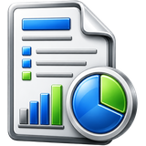
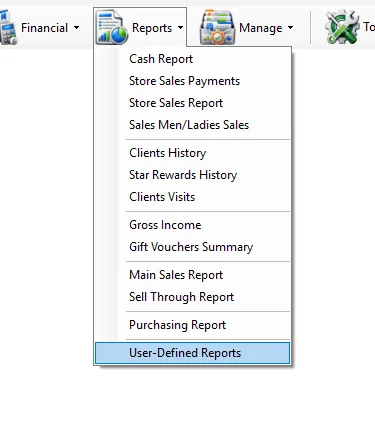
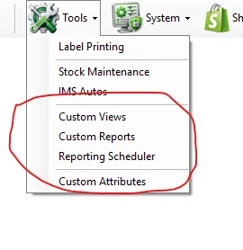

1 · Define
Custom Reports
Administrators or authorized users build reusable report definitions from approved IMS Custom Views.

User-Defined Reports are reports created through the IMS Custom Reports module and made available to authorized users. The report definition controls which columns, formats, calculations, grouping and sorting are used; the User-Defined Reports screen is where users select and run those reports.

The feature is split into three parts:
Administrators or authorized users build reusable report definitions from approved IMS Custom Views.
Authorized users select an available report, apply the supported basic criteria and generate the result.
Custom reports can be scheduled for automatic delivery, including email delivery or copying report output to FTP.

IMS shows active custom reports that are assigned to the logged-in user or marked for all users. If no report is available, IMS tells the user that a custom report must be created first.
When a report is selected, IMS shows its Created By user, Creation Date and report Description.
Unlike fixed IMS reports, a User-Defined Report does not always use the same criteria. IMS checks the underlying Custom View and automatically enables only the basic filters supported by that report:
| Basic field | When it is available |
|---|---|
| Suppliers | Enabled when the Custom View exposes a Supplier ID field. |
| Store | Enabled when the Custom View exposes a Store ID field. |
| Date From / To | Enabled when the Custom View exposes a transaction-date field. |
If one of these fields is not supported by the selected report, IMS disables that criterion automatically.
Some IMS criteria fields open a compact multi-selection list instead of a normal drop-down. You can select several values without holding Ctrl.
| Field display | Meaning |
|---|---|
| All | All available values are included. |
| One name | Exactly one value is selected. |
| Multi Selected | Two or more values are selected. |
While the report is running, the button changes to Cancel. Click it to stop the current report request.
The columns are not hard-coded into the User-Defined Reports screen. They come from the selected Custom Report definition. A report can define:
| Definition | Effect in the generated report |
|---|---|
| Fields | Controls which data columns appear. |
| Header | Controls the column caption shown to users. |
| Function | Can apply supported aggregation such as a configured report function instead of returning the raw field. |
| Group By | Controls how report data is consolidated. |
| Order By | Controls the default row order. |
| Custom Format | Controls how numbers, currency, percentages and dates are displayed. |
| Supplier / Store attributes | Allows configured custom attributes to appear with report data when the selected Custom View supports the corresponding supplier or store field. |
IMS applies the format saved with the Custom Report. Numeric values, local currency, percentages, dates and times are displayed according to the report definition and the user's IMS formatting settings.
| Action | Behavior |
|---|---|
| Export To Excel | Exports the generated User-Defined Report to Excel, preserving text-column handling based on the report's configured formats. |
| Send By Email | Sends the generated report by email. The email subject uses the custom report name and, when applicable, the selected date range. |
| Save As | Saves the generated report. Generate the report first. |
A Custom Report can also be used by Tools → Reporting Scheduler. This allows recurring report jobs to run without a user manually opening the User-Defined Reports screen.
The Reporting Scheduler can be used to distribute custom-report output automatically, including:
Generate and send a configured report automatically according to its schedule.
Generate the report and copy the resulting file to the configured FTP destination.
Report definitions are created and maintained through Tools → Custom Reports. Scheduled delivery and destination settings, including FTP where configured, are managed through Tools → Reporting Scheduler.
User-Defined Reports respect IMS report assignment and user permissions. A user sees only active reports assigned to that user or reports made available to all users. Export To Excel and Send By Email also follow the user's IMS access policy.
Create a report once in Custom Reports and make it available to selected IMS users.
Use Custom Views that expose Store ID or Supplier ID so users can apply those filters when running the report.
Use Reporting Scheduler when a report must be sent repeatedly or copied to an FTP destination.
Use Custom Views and Custom Reports to expose approved IMS data in a repeatable format without adding another fixed report screen.
When a Custom View exposes supplier information, User-Defined Reports can use supplier criteria from Manage → Suppliers. Supplier Custom Attributes maintained there can also be included by a Custom Report definition when the underlying Custom View supports supplier attributes.